Welcome
JESUS Loves You
Welcome to Indian Pentecostal Prayer Fellowship Germany
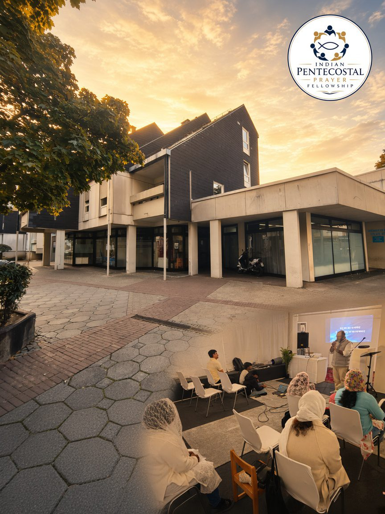
About Us
Join us as we worship in spirit and in truth, exalting the name of Jesus Christ. Experience heartfelt worship, hear the life-changing Word of God, and enjoy a loving fellowship that strengthens your faith and draws you closer to Him.
Our services are available in English, Malayalam, Hindi, Punjabi and Deutsch, and our doors are open — whether you are searching, believing, or simply looking for a welcome.
“And it shall come to pass in the last days, says God, that I will pour out of My Spirit on all flesh.”
Acts 2:17
To lead people to Jesus, make disciples, and give the Holy Spirit room — in Hemshofstraße 17 and to the ends of the earth.
A family of nations where miracles are ordinary, love is visible, and everyone finds their place in the Kingdom of God.
The Word of God is our foundation — living, true, and effective.
We honour Jesus with our whole heart, in spirit and in truth.
No one believes alone. We carry one another and grow together.
We serve the city with the Gospel, mercy, and practical help.
Pastor of Indian Pentecostal Prayer Fellowship Germany — teaching, pastoral care, and leading the church in worship and prayer.
Visit Us
Sunday
10:30 AM - 12:00 PM
Worship, the Word, and Communion. In English, Malayalam, Hindi, Punjabi and Deutsch.
English, Malayalam, Hindi, Punjabi & DeutschSunday
12:30 PM - 1:30 PM
Sunday School for children.
Sunday SchoolFriday
7:00 PM - 8:30 PM
Live worship, honest conversation, and faith that holds in daily life.
Youth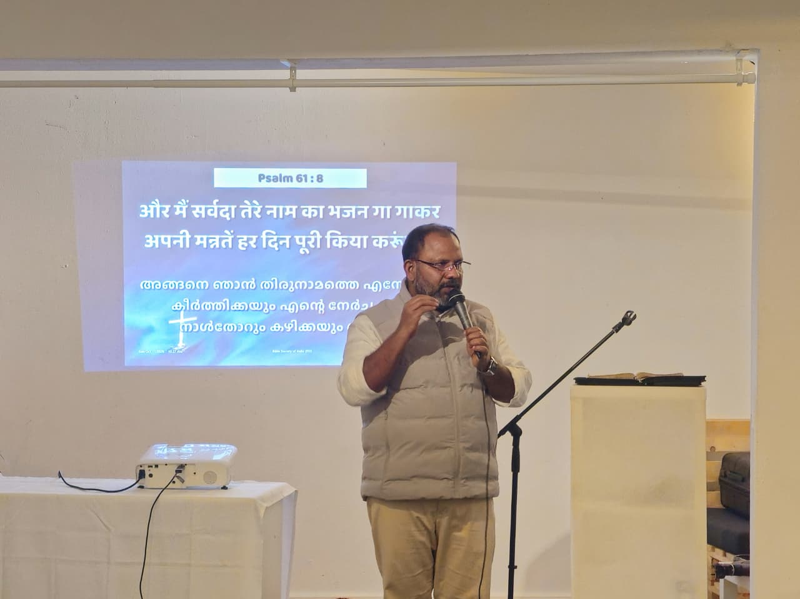
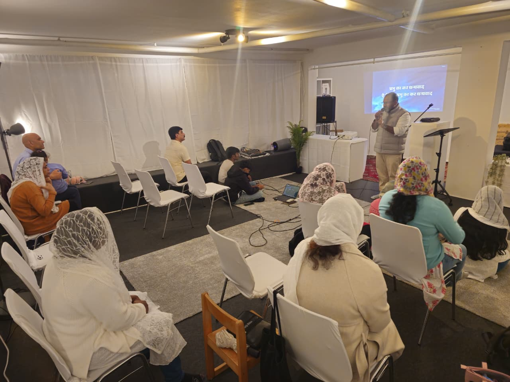
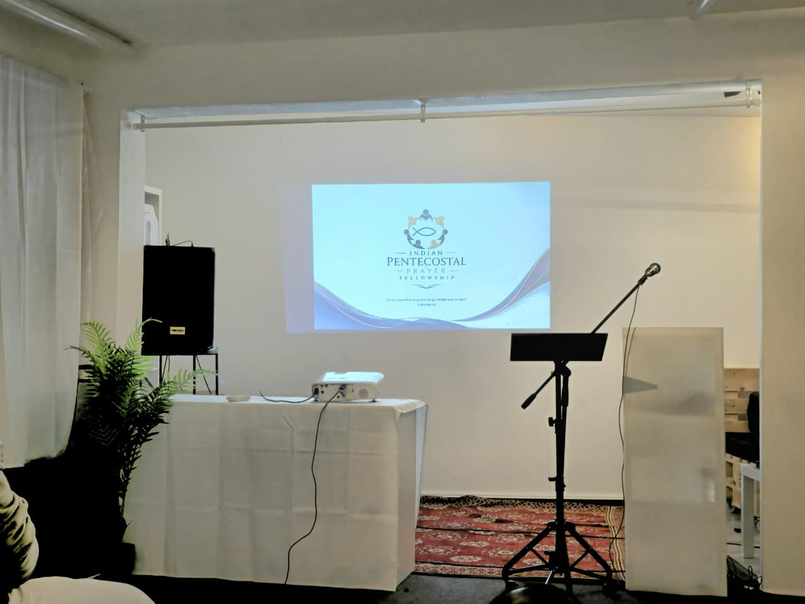
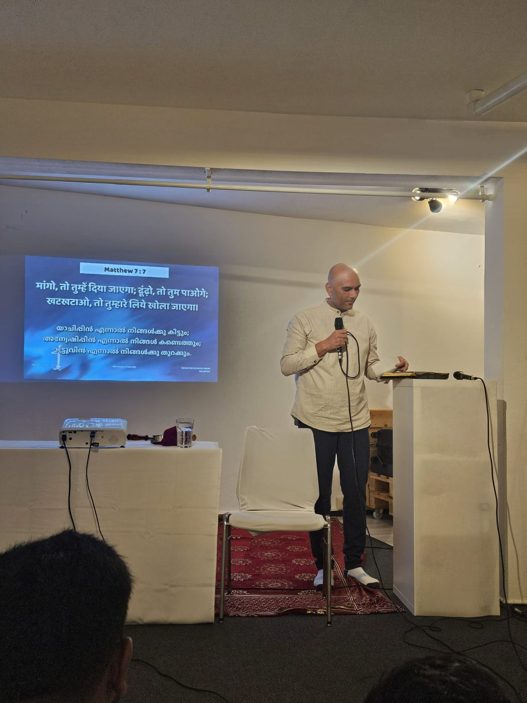
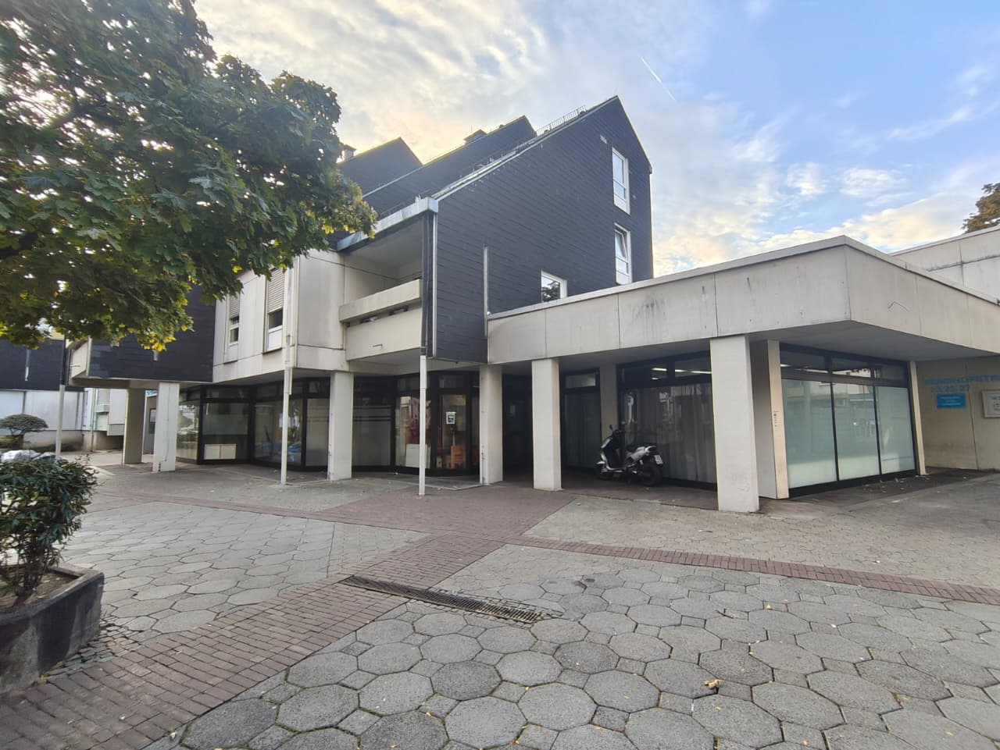
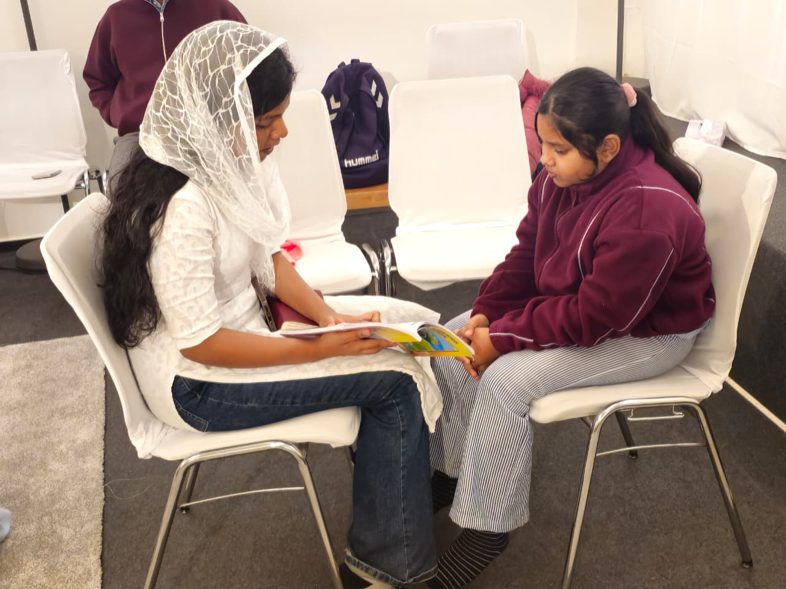
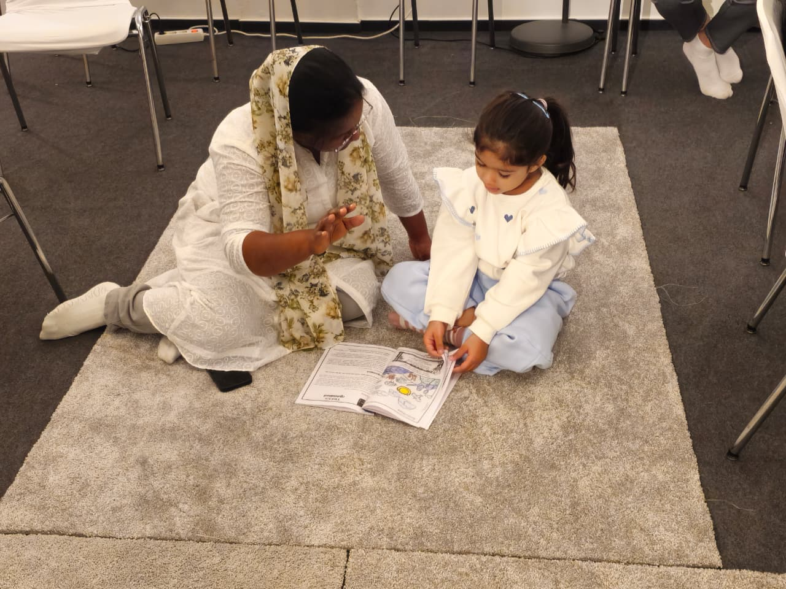
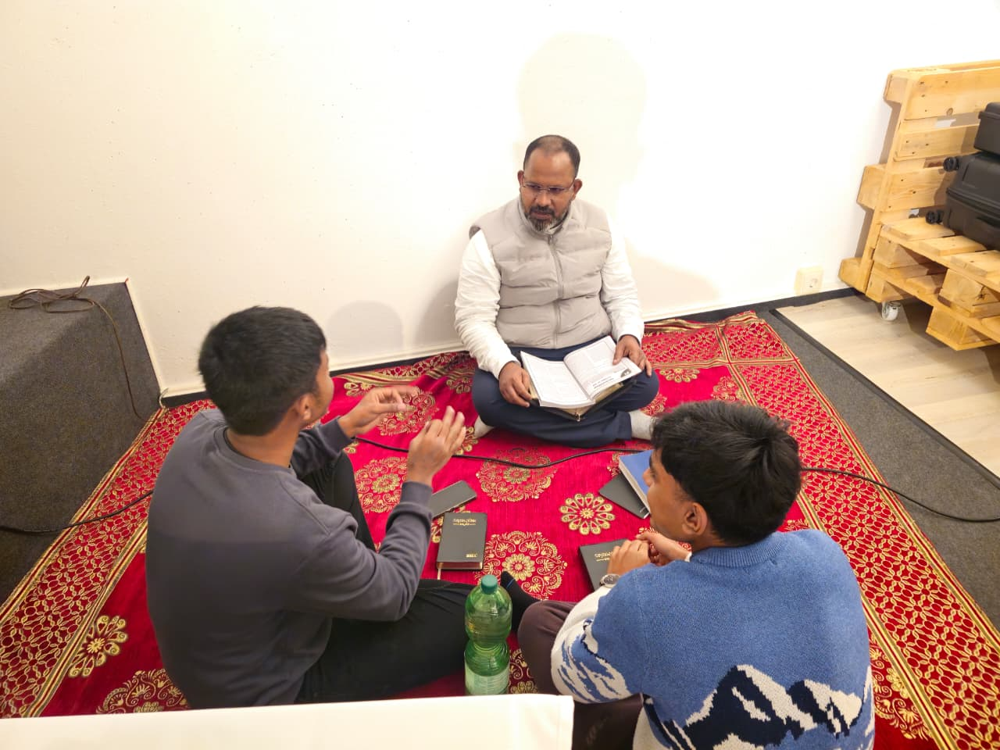
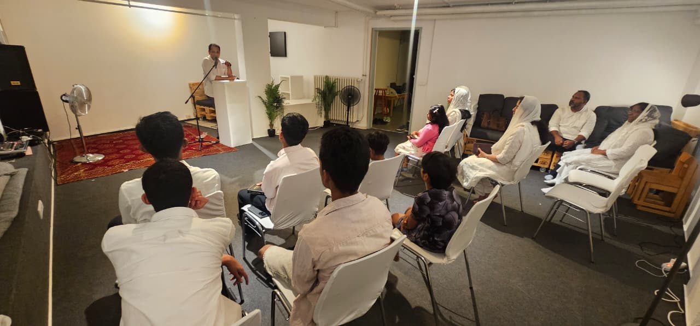
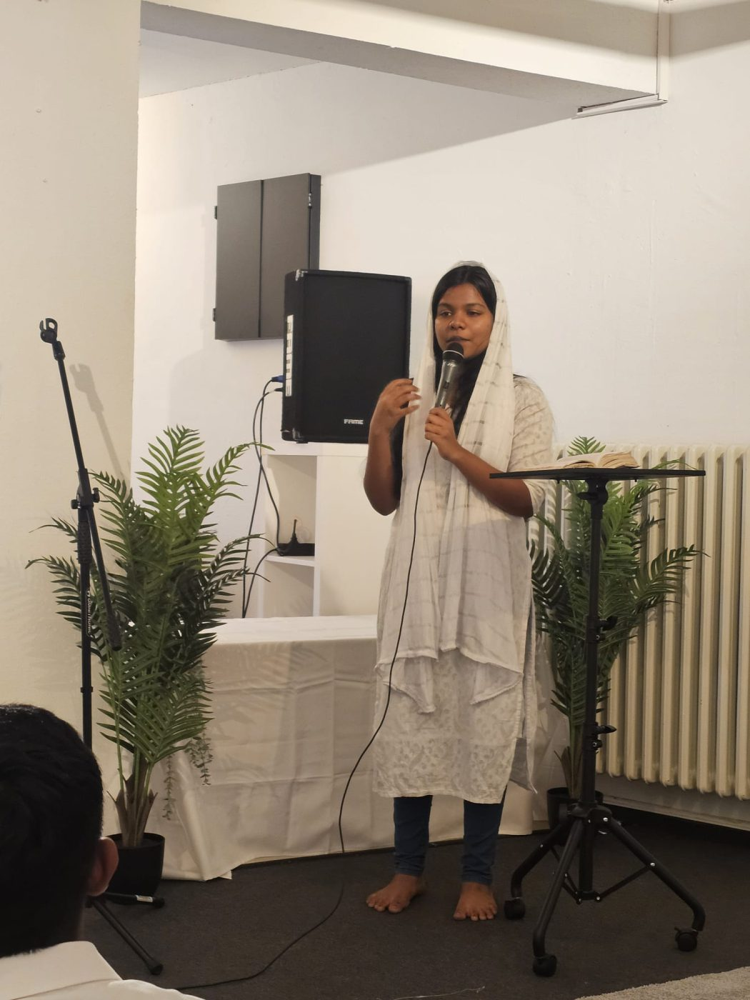
I came with empty hands and a heavy heart. In this church I found not only friends — I met Jesus. The Holy Spirit turned my life around.
Hemshofstraße 17
67063 Ludwigshafen am Rhein
Germany